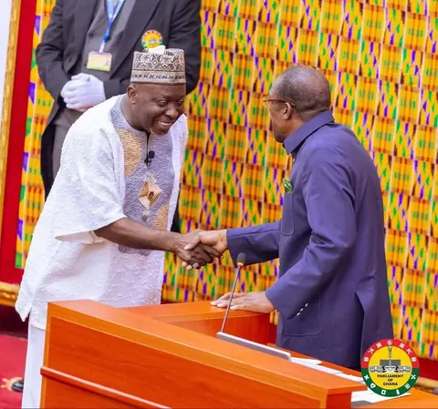
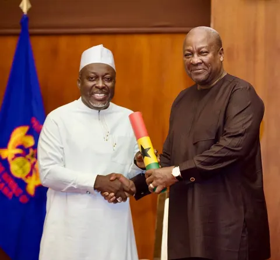
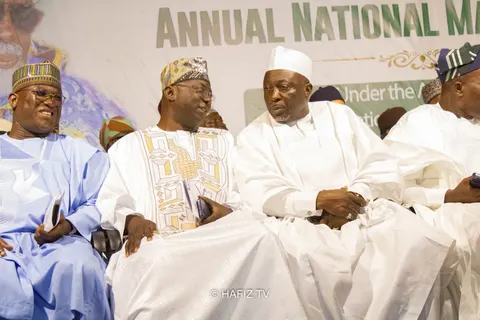

National Democratic Congress · Greater Accra
Hon.Ahmed Baba Jamal
Member of Parliament for East Ayawaso
Better Together
Welcome
Serving every community in East Ayawaso
I am honoured to serve the people of East Ayawaso in Parliament. Your views shape the way I represent you.
This website is a place for you to follow my work, see what is happening across the constituency, and reach my office directly. Please get in touch with your ideas, concerns and questions.
Hon. Ahmed Baba JamalMember of Parliament for East Ayawaso
[Draft wording for the office to approve or replace.]
My commitments
Priorities for East Ayawaso
Four commitments guide my work for the constituency. They will be updated as the work progresses.
-
Accessible representation
Be accessible to all constituents and take on board every view and piece of advice in shaping development plans for the constituency and representing you effectively in Parliament.
-
Youth skills fund
Create an industrial fund to train 100 young people from East Ayawaso every year in artisanal trades, starting from the second year in office.
-
Roads and safety
Lobby for the rehabilitation of all roads in East Ayawaso, overpasses on the Kanda highway to stop pedestrian deaths, and completion of the Nima gutter drainage project.
-
A new Nima market
Lobby for the reconstruction of the Nima market with full facilities, including a car park and pre-school, to boost commerce and create jobs.
Better Together
Working with every community, every trader and every young person to build a better East Ayawaso.
Share your viewsGallery
In the constituency and in Parliament
Recent moments from the MP's work.
{kind=link}

{kind=link}

{kind=link}

Have something to say?
Send a message to the office about an issue in your community, a request for help, or an idea for East Ayawaso.